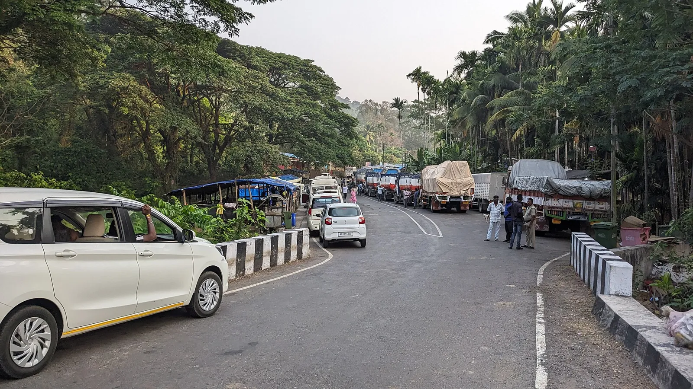
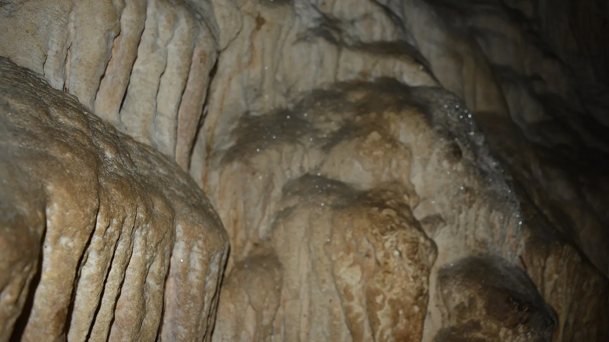
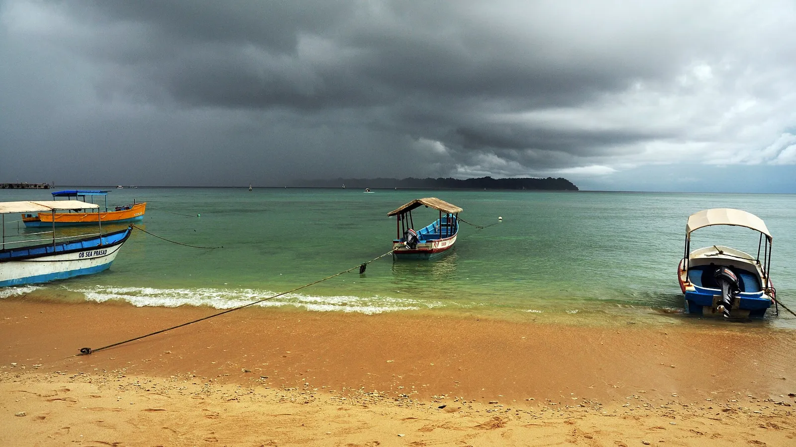
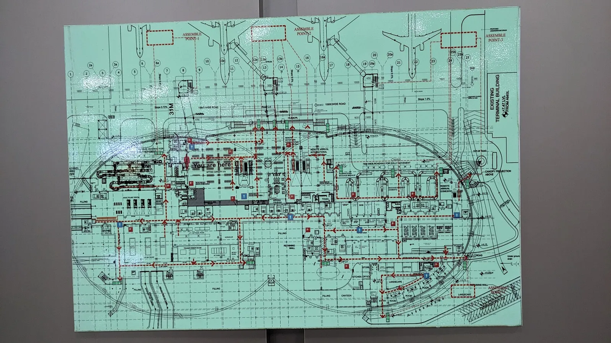
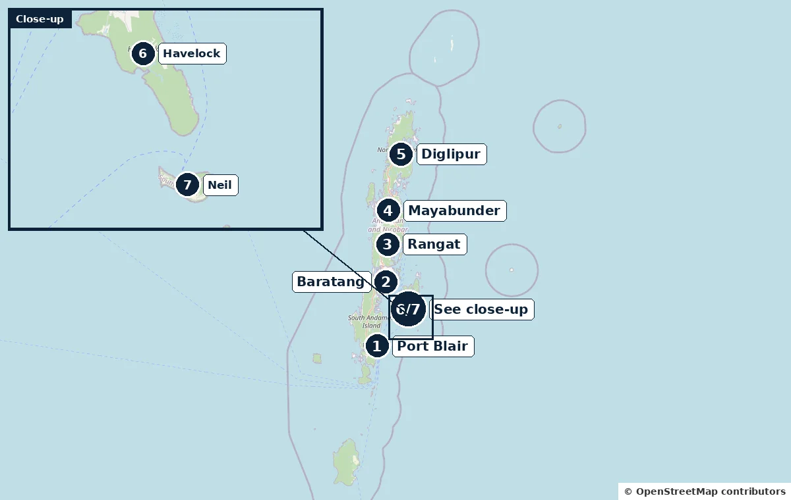

Most Andaman trips stop at Havelock. This one goes to the far north, to the sandbar that joins Ross and Smith islands at Diglipur, and comes back through the limestone caves of Baratang before the classic islands. Private ferries link Port Blair, Havelock and Neil, and every boat time is planned around the tides.
See it for yourself
Photos from the journey









Where you go
The journey on one map

Port BlairBaratangRangatMayabunderDiglipurHavelockNeilPort Blair
Day by day, in short
Daily travel brief
Distances are by road for the whole day. The full plan with timings comes with your detailed itinerary.
-
1
Port Blair and the Cellular Jail
- Cellular Jail: cars drop you about 400 m from the gate; vehicles cannot wait outside.
- Light-and-sound show: hindi and English shows run at set times, subject to tickets.
-
2
North through the forests to Diglipur
- Leave Port Blair: the road crosses the Jarawa tribal reserve in escorted convoys.
- Carry original photo ID (not PAN) for the convoy and ferries.
-
3
Ross & Smith: two islands, one sandbar
- Aerial Bay jetty: at low tide you walk the sandbar between the islands; at high tide it disappears.
- Ross & Smith Islands: swimwear under clothes, towel, cap and reef-safe sunscreen.
-
4
Baratang caves and mangroves, back to Port Blair
- Baratang mangrove creek and limestone caves: baratang excursions do not run on Mondays; we plan the dates around it.
- Wear closed shoes for the caves; the path can be muddy.
-
5
North Bay coral and Ross Island
- North Bay Island: activities are paid on the spot.
- Ross Island is closed on Wednesdays; we check the day.
-
6
Private ferry to Havelock and Radhanagar at sunset
- Private ferry to Havelock: no alcohol on board.
- Radhanagar Beach: the beach closes at sunset.
-
7
Elephant Beach snorkelling
- Elephant Beach: pay for water sports at the boarding point.
- Elephant Beach: alcohol is banned on Elephant Beach.
-
8
Neil Island's beaches and rock bridge
- Natural Bridge: water shoes: the coral is sharp.
- Neil's sunset point at Laxmanpur Beach 1 is the best of the trip.
-
9
Back to Port Blair
- Pack shells and coral? Do not: taking them is illegal.
-
10
Fly home
- Thank you for travelling the Andamans with us.
Local know-how
Travel hacks from our desk
UPI, cards and cash
UPI works almost everywhere, even at small stalls. Keep some cash in INR 100 and 200 notes for temples, parking, tips and places where the network is weak.
Temple and shrine etiquette
Cover shoulders and knees. Remove shoes where asked, and carry socks for hot stone floors. Leather belts and bags are not allowed inside some Jain and Hindu temples. Ask before photographing people and inside shrines.
Water and street food
Drink sealed bottled or filtered water only. Choose busy stalls where food is cooked in front of you, and skip cut fruit and ice from roadside stalls.
Driving times
Indian roads are slower than the kilometres suggest: plan on 40 to 50 km an hour on highways and much less in hills and towns. Your driver's breaks and meal stops are built into the timings.
Plugs and tipping
Plugs are Indian three-pin and two-pin, 230 volts. Tipping drivers and guides about INR 300 to 500 a day is appreciated.
When to go
Best time to visit for this journey
February to April: calm seas, clear water for snorkelling and reliable ferries.
October to May. November to April has the calmest seas and clearest water for snorkelling. Avoid mid-May to September, when the monsoon cancels ferries. Christmas and New Year are the most expensive weeks.
The package
What's included
Included
- 9 nights' accommodation with breakfast
- Private car for all transfers
- Private ferries Port Blair–Havelock–Neil–Port Blair
- Shared boats to Ross & Smith, North Bay, Ross Island and Elephant Beach
- Entry permits and forest fees in the plan
- 24/7 support from Blue Diamond Voyage
Not included
- Flights to Port Blair
- Water sports, scuba and camera fees
- Lunches and dinners
- Travel insurance
The detailed itinerary
Some journeys are planned. Ours are crafted.
The full 10-day plan is ready: hour-by-hour timings, drive times, temple dress codes, food for your diet and a route map for every day. Tell us your dates and your city, and we'll send it to you on WhatsApp, shaped around you.
- Hour-by-hour timings
- A route map for every day
- Hotel and room details
- Visa and entry steps
- Vegetarian and Jain dining
24/7 travel desk+91 97148 59797+91 98242 21400
Photo and map credits
- Cellular Jail: Tonynirappathu, CC BY 4.0, via Wikimedia Commons
- Jirkatang Check Post: Vinayaraj, CC BY-SA 4.0, via Wikimedia Commons
- Aerial Bay Jetty: Robert Campbell, CC BY-SA 3.0, via Wikimedia Commons
- Baratang Limestone Caves: Pratiti090, CC BY-SA 4.0, via Wikimedia Commons
- North Bay Island: David Jackmanson, CC BY 2.0, via Wikimedia Commons
- Radhanagar Beach: La Vacanza Travel Private Limited, CC BY-SA 4.0, via Wikimedia Commons
- Elephant Beach Havelock: Vyacheslav Argenberg, CC BY 4.0, via Wikimedia Commons
- Bharatpur Beach Neil: Biswajit Majumdar, CC BY-SA 3.0, via Wikimedia Commons
- Chidiya Tapu: Biswarup Ganguly, CC BY 3.0, via Wikimedia Commons
- Veer Savarkar International Airport: Vinayaraj, CC BY-SA 4.0, via Wikimedia Commons
- Maps: © OpenStreetMap contributors; road routes by OSRM.